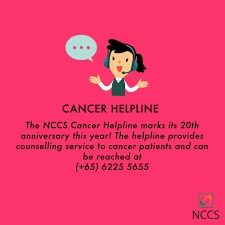

tel:(888) 793-9355
Social support is regarded as a complex construct which has long been suggested to have direct and buffering effects on patients' wellbeing and emotional adjustment to cancer. Cross-sectional and prospective studies show a positive association between perceived social support and psychological adjustment following cancer treatment. Research findings suggest that the evidence for the relationship between social support and cancer progression is sufficiently strong.
The diagnosis and treatment of cancer can be an isolating experience. The challenge is how to mobilize yourself and those around you to help make it less so. Friends and family are the starting point. For those with few relationships, professionals, peers, and groups of other patients may provide solace and support. Here we discuss connections we have to others (our social network), the many benefits of support, and strategies for enhancing support to aid in coping with cancer.
Our Community Server - Hope Circle
